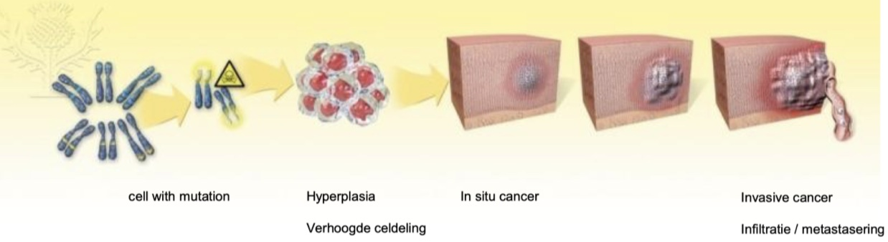
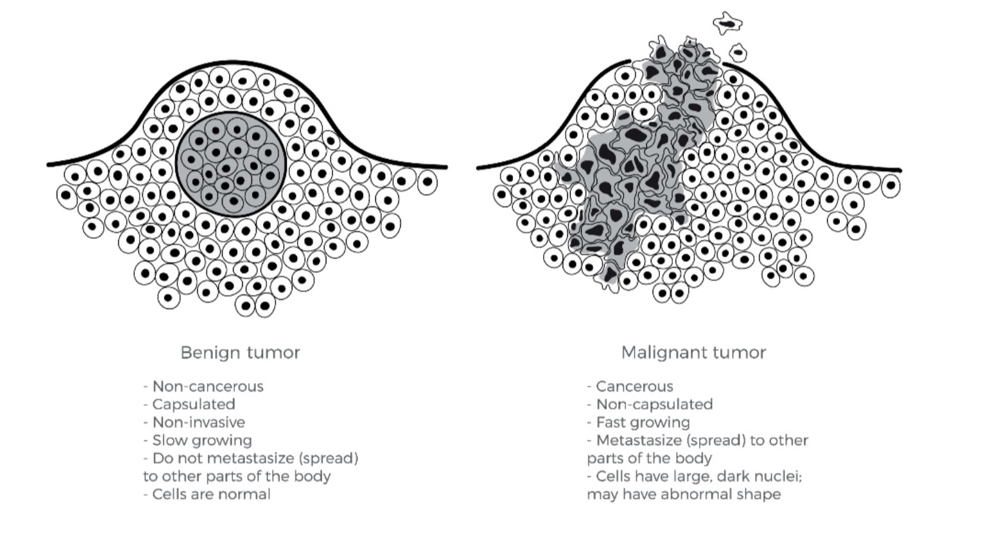

1. De essentie: Wat is kanker?
Kanker is een verzamelnaam voor een heterogene groep aandoeningen die worden gekenmerkt door een ontregeling van de homeostase in de celdeling. De term is etymologisch afgeleid van het Griekse oncos, wat massa of tumor betekent¹. Deze pathologische toestand ontstaat door DNA-mutaties, waardoor cellen de reguliere signalen voor groeistop of apoptose (geprogrammeerde celdood) negeren¹.
Het ontstaansmechanisme: Van mutatie naar metastase
De transformatie van een gezonde cel naar een maligne proces is een progressief traject dat vaak meerdere jaren beslaat. Dit proces verloopt via verschillende histologische stadia¹:
- Celmutatie en Hyperplasie: Initieel ontstaat een genetische aberratie. De cel reageert hierop met een verhoogde delingsfrequentie (hyperplasie), wat resulteert in een toename van het weefselvolume¹.
- In situ carcinoom: De cellen vertonen duidelijke maligne kenmerken, maar de tumor respecteert nog de basaalmembraan. Er is op dit punt nog geen sprake van infiltratieve groei in het omliggende stroma of de bloedvaten¹.
- Invasieve groei: De tumorcellen breken door de basaalmembraan heen. Dit markeert de overgang naar een invasief carcinoom, waarbij gezonde omliggende weefselstructuren worden aangetast¹.
- Metastasering: Volgens het model van Winslow vindt verspreiding plaats via een proces van adhesie, lokale afbraak van de extracellulaire matrix en locomotie door de bloed- of lymfebanen om secundaire tumoren (metastasen) op afstand te vormen¹.

2. Differentiatie: Benigne versus Maligne
Het klinische onderscheid tussen benigne (goedaardige) en maligne (kwaadaardige) tumoren is cruciaal voor de prognose en het fysiotherapeutisch behandelplan. Een benigne tumor vertoont geen metastaserend potentieel, maar kan door expansieve groei en compressie van vitale structuren alsnog ernstige morbiditeit veroorzaken¹.
| Kenmerk | Benigne | Maligne | Toelichting |
|---|---|---|---|
| Begrenzing | Scherp begrensd | Onscherp begrensd | Maligne tumoren vertonen infiltratieve groei. |
| Kapsel | Vaak aanwezig | Zelden aanwezig | Een kapsel beperkt de tumor fysiek in zijn expansie. |
| Groeiwijze | Expansief | Infiltratief | Benigne duwt opzij; maligne groeit erdoorheen. |
| Differentiatie | Hoog | Vaak laag | Lage differentiatie duidt op verlies van oorspronkelijke celfunctie. |
| Mitotische activiteit | Laag | Hoog | De delingssnelheid is bij maligniteiten verhoogd¹. |
| Metastasering | Afwezig | Mogelijk | Het meest kritieke onderscheid voor de systemische prognose. |

3. Stadiëring: De TNM-classificatie
De TNM-classificatie vormt de internationale standaard voor het vastleggen van de anatomische uitgebreidheid van de ziekte¹.
- T (Tumor): Afmeting en lokale doorgroei van de primaire tumor (T1 t/m T4).
- N (Nodes): Betrokkenheid van regionale lymfeklieren (N0 t/m N3).
- M (Metastasen): Afwezigheid (M0) of aanwezigheid (M1) van metastasen op afstand.
Praktijkvoorbeeld: T3 N1 M0 (Niet-kleincellig longcarcinoom)
T3: De tumor is bijvoorbeeld 6 cm groot of is doorgegroeid in de thoraxwand (borstkas).
Waarom geen T2? De tumor is groter dan 5 cm.
Waarom geen T4? Er is geen sprake van ingroei in vitale organen (zoals het hart of de grote vaten) en de tumor is kleiner dan 7 cm.
N1: Er zijn kankercellen gevonden in de lymfeklieren rond de longpoort (hilus) aan dezelfde zijde als de tumor.
Waarom geen N2? De lymfeklieren in het mediastinum (het gebied tussen de longen) zijn nog schoon.
M0: Er zijn op scans geen uitzaaiingen gevonden in organen op afstand (zoals de bijnieren, lever of hersenen).
In de diagnostiek wordt vaak gebruikgemaakt van PET-CT-scans, waarbij de verhoogde metabole activiteit (suikerconsumptie) van maligne cellen zichtbaar wordt gemaakt¹.
4. Medische Behandelmethoden en Functionele Impact
Elke oncologische interventie heeft specifieke fysiologische gevolgen die de fysieke belastbaarheid van de patiënt direct beïnvloeden¹.
| Methode | Type | Mechanisme | Functionele implicaties voor de fysio |
|---|---|---|---|
| Chirurgie | Lokaal | Resectie van tumorweefsel. | Littekenfibrose, zenuwletsel, risico op lymfoedeem¹. |
| Radiotherapie | Lokaal | Ioniserende straling. | Radiodermitis, fibrosering van bindweefsel, vermoeidheid¹. |
| Chemotherapie | Systemisch | Cytostatica (celdelingremmers). | Anemie, misselijkheid, cardio- en neurotoxiciteit¹. |
| Hormoontherapie | Systemisch | Antagoneren van groeihormonen. | Artralgie (gewrichtspijn), versnelde osteoporose¹. |
| Targeted therapie | Systemisch | Selectieve moleculaire inhibitie. | Risico op hartfalen; daling van de ejectiefractie¹. |
Bronvermelding:
- Kool N. Hoorcollege week 2 Blok 8 Oncologie [Presentatie]. Amsterdam: Hogeschool van Amsterdam; 21 april 2026.
- KNGF. Richtlijn Fysieke fitheid van mensen met en na kanker. Utrecht: Koninklijk Nederlands Genootschap voor Fysiotherapie; 2025.
- Peel AB, et al. Cardiorespiratory fitness in breast cancer patients: a meta-analysis. Cancer; 2014.
- Wang J, et al. Nutrition and exercise interventions in cancer-related sarcopenia. Journal of Clinical Oncology; 2023.
- Vega MC, et al. Muscle mass as a predictor of toxicity and survival in oncology. Support Care Cancer; 2016.
- Kurk SA, et al. Sarcopenia and outcomes in colorectal cancer. European Journal of Cancer; 2019.
- Winslow T. Schematic of metastasis stages. National Cancer Institute; 2016.